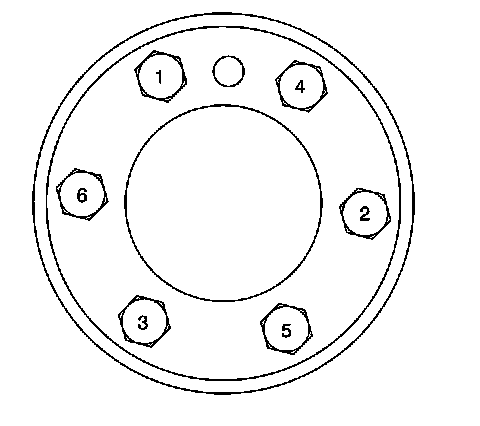

Flex Plate: Specifications

Automatic Transmission Flex Plate Bolts
First Pass 20 N.m (15 lb ft)
Second Pass 50 N.m (37 lb ft)
Final Pass 100 N.m (74 lb ft)
Flex Plate-to-Torque Converter Bolts - 4L60-E/4L70-E/6L80 Transmission
63 N.m (47 lb ft)
Flex Plate-to-Torque Converter Bolts - 4L80-E Transmission
60 N.m (44 lb ft)